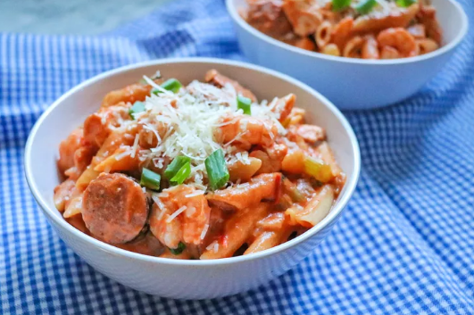

Pastalaya

Description
Pastalaya is a spin on the classic cajun dish "jambalaya" -- instead of rice, we will be using pasta and cream to create a
smooth, creamy dish. The recipe is best for intermidiate cooks.
Ingredients
- 2 tablespoons butter
- 1 pound of andouille sausage, sliced
- 1 cup finely chopped celery
- 1 large sweet onion, finely chopped
- 1 large green bell pepper, finely chopped
- 3 cloves garlic, finely chopped
- 1 pound skinless, boneless chicken thighs, cut into bite-sized pieces
- 1 (28 ounce) can crushed tomatoes
- 1 teaspoon sweet paprika
- 1 teaspoon Creole seasoning
- 1/4 teaspoon cayenne pepper
- 2 cups chicken broth
- 1 (16 ounce) package penne pasta
- 1 pound uncooked medium shrimp, peeled and deveined
- 1/2 cup heavy whipping cream
- 1/2 bunch fresh thyme, chopped
- 1/2 bunch fresh oregano, chopped
- 1/2 bunch fresh basil, chopped
- 1/4 cup chopped green onions
- 1/4 cup Parmesan cheese, or to taste
Steps
- Melt butter in a large pot over medium heat. Add sausage and cook for 2 minutes. Add celery, onion, bell pepper,
and garlic; cook until soft, 5 to 7 minutes. Add chicken and cook until no longer pink inside and juices run clear,
5 to 7 minutes more. Add tomatoes, paprika, Creole seasoning, and cayenne pepper; bring to a simmer and cook for 10 minutes.
-
Add broth to the pot and return to a simmer. Add penne and simmer for 8 minutes. Add shrimp. Continue to simmer, stirring constantly,
until pasta is tender but firm to the bite and shrimp are cooked through, about 7 minutes more.
-
Stir in cream. Stir in thyme, oregano, and basil. Cook until just heated through, 3 to 5 minutes more. Serve topped with green
onions and Parmesan cheese.
Home